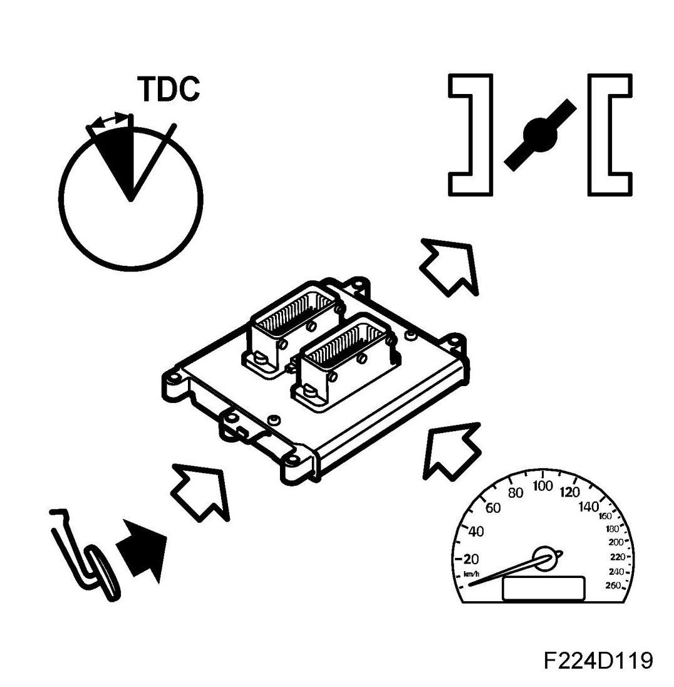
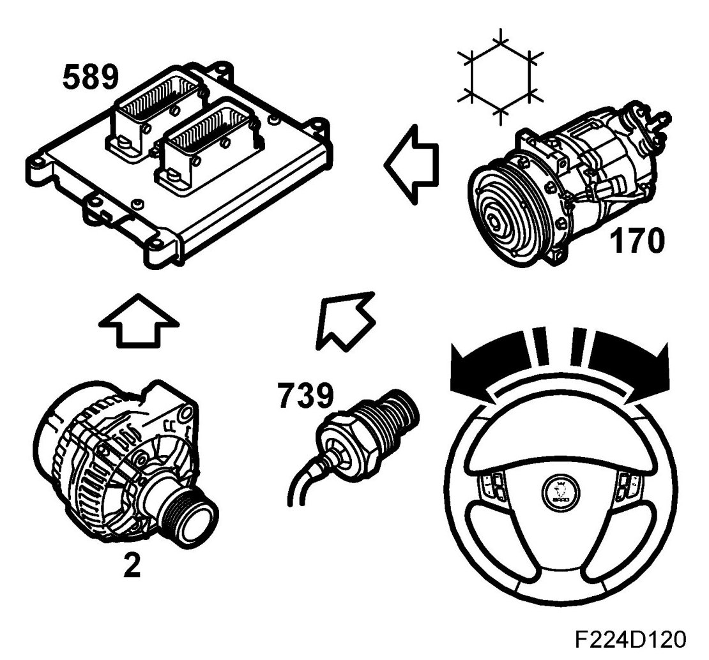
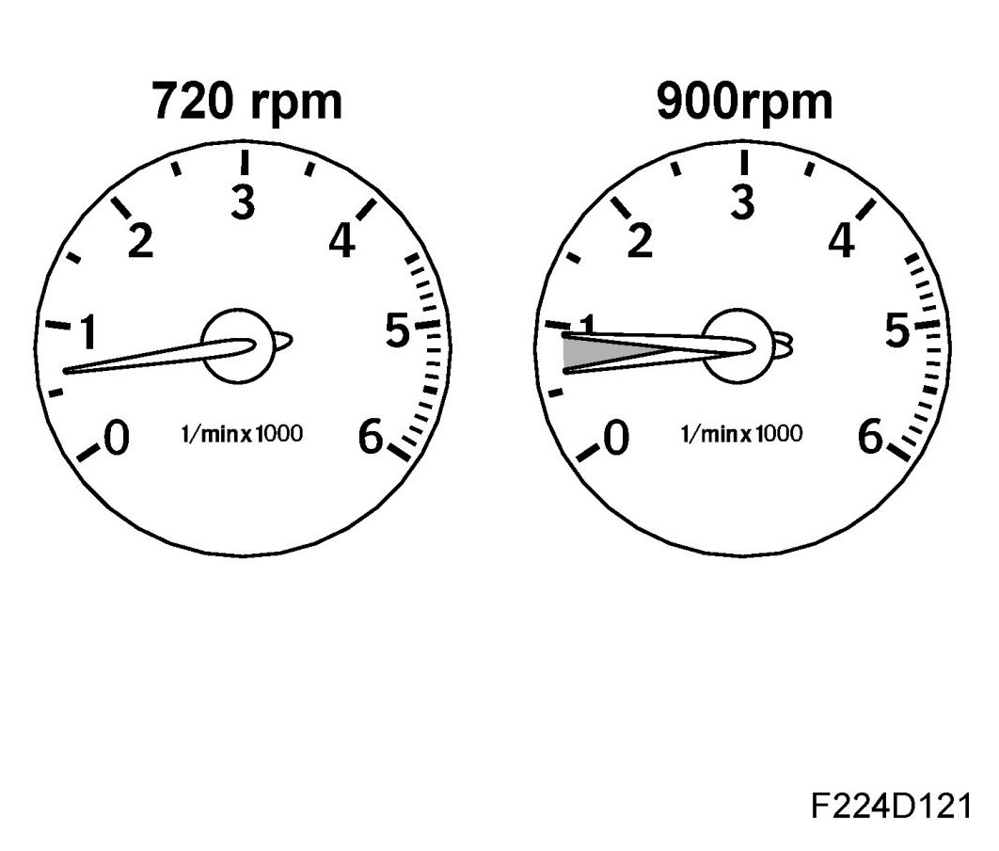
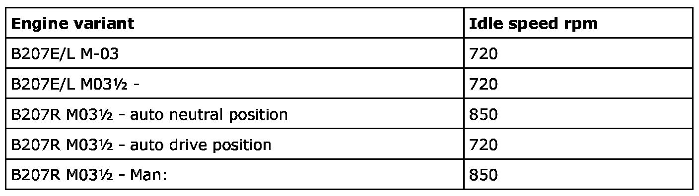

Idle Speed: Description and Operation
Idling Speed Ignition Timing
Idling speed ignition timing

This function is used when the engine is idling, i.e. accelerator pedal released. The objective of idling speed ignition timing is to make sure the engine runs with optimum ignition advance.
Together with engine air mass control, idling speed ignition timing makes sure the engine develops the correct idling speed/torque to drive e.g. the generator, power steering pump and A/C compressor.

Idling speed

The normal idle speed is shown in the table below but if necessary can be increased to 950 rpm. This can be done e.g. at high alternator load or high power steering assistance required. Immediately after starting, the idle speed is always increased and falls after a while to the normal idle speed.
This is done by regulating the ignition timing and air mass control.

Engine torque requirement
The control module calculates the necessary engine torque in order to drive the engine and other loads such as the A/C compressor and the generator.
This calculation is the basis for the idling speed ignition timing so that the correct torque is obtained.